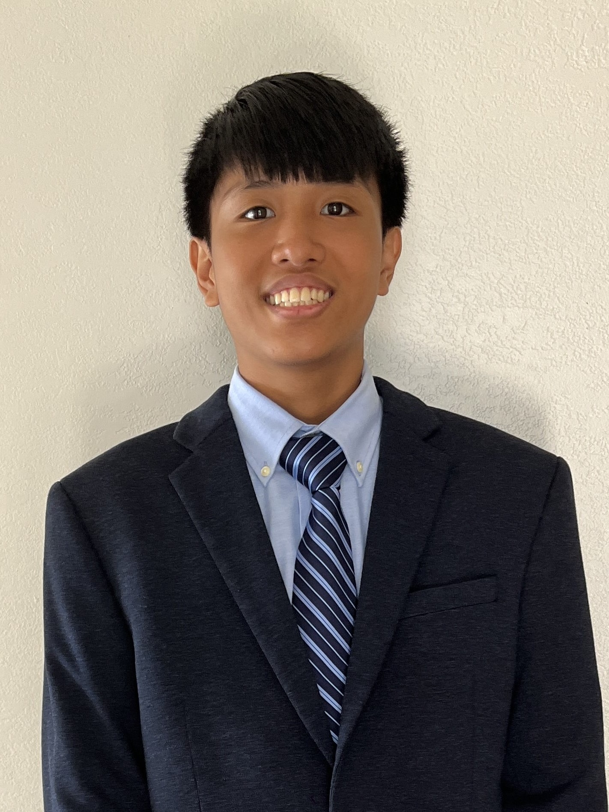

Home
About Me
2761300277@k12.hi.us
chasepasion@gmail.com
(808) 304-6581
I am Chase Jacob Pasion and I am a currently a junior in High School. As a student of Waipahu High School, I plan to continue my academic studies and go to college. Throughout my life, my interests have been changing and I feel like the thing that interested me the most was computers and technology. I hope to pursue technology because I love to see how it changes the world.
Some things about me:
- I will graduate in May 2025.
- I was born and raised in Waipahu.
- My birthday is December 11, 2007. I am currently 16 years old.

Career Objective
I plan to study in computer science or some other thing.
- I plan to go to a 4 year college to get a degree. I will probably be enrolling in the University of Hawaii.
- I am interested in studying about stuff like software engineering, robots, and AI.
- I am also interested in other things such as engineering, aerospace engineering, or even in the medical field.

Present and Future Goals
My goals right now in high school is to get good grades and get through the year. I hope I can get Academic Honors as I am taking AP classes as well as Early College.
In the future, my goal is to graduate then enroll in a university.